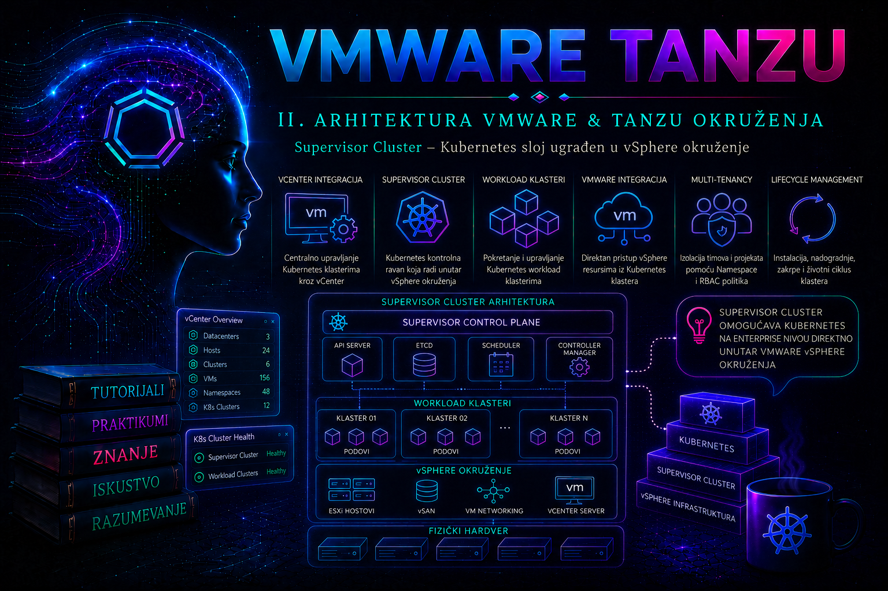

VMware & Tanzu

vSphere obezbeđuje računarske, memorijske, mrežne i skladišne resurse na kojima rade virtuelne mašine i Kubernetes komponente, ali se njihovo organizovano upravljanje u enterprise okruženju oslanja na vCenter Server. U Tanzu arhitekturi vCenter nije samo grafička konzola za administraciju ESXi hostova. On postaje centralna kontrolna tačka koja povezuje infrastrukturni inventar, identitete, dozvole, politike resursa, skladišne klase, mrežne zavisnosti, Supervisor funkcionalnosti i životni ciklus Kubernetes servisa.
Administrator zato mora da razlikuje tri nivoa upravljanja. ESXi izvršava radna opterećenja na pojedinačnom hostu. vCenter upravlja zajedničkim vSphere inventarom i orkestrira operacije nad klasterom. Kubernetes API upravlja deklarativnim objektima unutar Supervisor i workload klastera. vCenter ne zamenjuje Kubernetes API, niti Kubernetes preuzima upravljanje fizičkom i virtuelnom infrastrukturom. Pouzdano Tanzu okruženje nastaje tek kada su ova tri nivoa ispravno povezana, vremenski sinhronizovana, zaštićena odgovarajućim sertifikatima i dodeljena jasno razdvojenim administratorskim ulogama.
Uloga vCenter Servera u Tanzu arhitekturi
vCenter Server Appliance, odnosno VCSA, centralizuje upravljanje datacentrima, vSphere klasterima, ESXi hostovima, mrežama, datastore objektima, resursnim skupovima i virtuelnim mašinama. Kada je na vSphere klasteru aktiviran vSphere Supervisor, isti inventar dobija dodatne objekte i kontrolne tokove namenjene Kubernetes platformi. Administrator iz vSphere Client interfejsa vidi stanje Supervisora, upravlja namespace objektima, dodeljuje storage politike, prati kapacitete i kontroliše ko sme da koristi platformu.
Centralizacija je važna zato što Kubernetes radno opterećenje nije nezavisno od infrastrukture. Kreiranje workload klastera, PersistentVolume objekta ili virtuelne mašine preko Kubernetes API-ja na kraju zahteva konkretne CPU, memorijske, mrežne i skladišne resurse. vCenter održava vezu između deklarativnog zahteva i vSphere objekata koji taj zahtev realizuju. Njegovi servisi sarađuju sa Supervisor kontrolnom ravni, ESXi hostovima, vSphere Distributed Switch ili NSX mrežom, vSphere CSI komponentama, Content Library servisima i sistemom identiteta.
U aktuelnim izdanjima dokumentacija može koristiti nazive vSphere Supervisor, vSphere Kubernetes Service ili ranije nazive kao što su vSphere with Tanzu i Tanzu Kubernetes Grid Service. Tačan naziv, dostupne opcije i način licenciranja zavise od verzije vSphere ili VMware Cloud Foundation platforme. Administrator ne sme pretpostaviti da su ekrani, Kubernetes verzije, mrežni modeli ili podržane funkcije isti između vSphere 7, vSphere 8 i novijih VCF izdanja. Pre svake promene mora proveriti dokumentaciju koja odgovara tačnoj verziji vCenter Servera, ESXi hostova i Supervisor komponenata.
Kontrolna ravan između vCenter-a i Kubernetes servisa
Aktiviranje Supervisora uvodi Kubernetes kontrolnu ravan integrisanu sa vSphere okruženjem. Njene kontrolne virtuelne mašine rade na ESXi klasteru, dok vCenter čuva konfiguraciju platforme, orkestrira njeno postavljanje i prati željeno i stvarno stanje. Posebni vCenter servisi, uključujući Workload Control Plane servis, obrađuju operacije koje povezuju vSphere inventar i Supervisor.
Ova integracija koristi obrazac usaglašavanja stanja. Administrator ili automatizovani sistem zada željeno stanje, na primer aktivan Supervisor, dostupnu Kubernetes verziju ili određenu konfiguraciju namespace-a. Kontrolne komponente zatim pokušavaju da stvarno stanje infrastrukture usklade sa tom deklaracijom. Zbog toga status Configuring ne znači automatski kvar. Kratkotrajno stanje može biti normalno dok se kreiraju kontrolne virtuelne mašine, distribuiraju sertifikati ili instaliraju servisi. Problem postoji kada stanje traje duže od očekivanog, kada se zadatak ne pomera, kada se u događajima ponavljaju greške ili kada relevantni servisi i objekti ne dostižu zdravo stanje.
vCenter je zavisnost upravljačkog sloja, ali kratkotrajan prekid njegove dostupnosti ne mora trenutno zaustaviti već pokrenute aplikacione podove. ESXi hostovi i postojeći Kubernetes control plane mogu nastaviti da izvršavaju deo funkcija. Ipak, operacije koje zahtevaju vCenter, kao što su promene inventara, određeno dinamičko provisionovanje, upravljanje namespace resursima, kreiranje novih klastera i infrastrukturno usaglašavanje, mogu biti blokirane ili degradirane. Zato visoka dostupnost aplikacije ne sme biti poistovećena sa zdravljem upravljačke ravni.
Tri upravljačke ravni i njihove autoritativne granice
Izraz upravljačka ravan u ovoj lekciji ne označava jedan proizvod niti jedan API endpoint. Postoje najmanje tri povezana, ali različita autoriteta. vCenter upravlja vSphere inventarom i infrastrukturnim životnim ciklusom; Supervisor Kubernetes API čuva i usaglašava željeno stanje Kubernetes i vSphere IaaS objekata izloženih kroz deklarativne API-je; svaki VKS workload klaster ima sopstveni Kubernetes API i sopstveni skup kontrolera za objekte tog klastera. Četvrti sloj, izvršna ravan ESXi hostova, zaista pokreće virtuelne mašine i druge podržane workload-e, ali nije mesto na kojem se ručno „popravlja” željeno Kubernetes stanje.
| Ravan ili interfejs | Autoritativno stanje | Tipična operacija | Dokaz i granica |
|---|---|---|---|
| vCenter Server i vSphere API | Inventar, klasteri, hostovi, VM objekti, resource pool-ovi, vDS/NSX veze, SPBM politike, privilegije i zadaci | Aktiviranje Supervisora, dodela namespace kapaciteta i politika, praćenje infrastrukturnog taska | vSphere Client, Tasks/Events, alarmi, vCenter API i vpxd/wcp logovi; ne dokazuju spremnost aplikacije |
| Supervisor Kubernetes API | Kubernetes objekti koje Supervisor podržava: namespace sadržaj, VKS cluster resursi, VM Service i platformski CRD/API objekti zavisno od verzije i aktivnih servisa | kubectl apply nad deklarativnim objektom u odobrenom vSphere Namespace-u |
metadata.generation, status.conditions, Events i kontrolerski logovi; ne daje pravo za direktno menjanje vCenter inventara mimo izloženog API modela |
| VKS workload-cluster API | Deployment, StatefulSet, Service, ConfigMap, Secret, RBAC i ostali resursi konkretnog tenant klastera | Objavljivanje aplikacije i upravljanje njenim Kubernetes životnim ciklusom | kubectl, Events, audit i workload logovi tog klastera; nije isto što i Supervisor kontekst |
| ESXi izvršna ravan | Izvršavanje VM procesa, CPU i memorijsko raspoređivanje, pristup virtualnoj mreži i storage putanjama | Pokretanje Supervisor control-plane ili VKS čvora kao vSphere workload-a | Host stanje, VM runtime, vSAN/datastore i mrežna telemetrija; ručna izmena upravljanog sistemskog VM objekta nije podržan način korekcije |
Granica je važna i pri delegiranju. vSphere Namespace nije isto što i običan Kubernetes Namespace: on je vCenter inventarski i upravljački objekat koji povezuje tim, kapacitet, storage politiku, mrežu i dozvole sa prostorom u Supervisor API-ju. Nasuprot tome, namespace unutar VKS klastera pripada API-ju tog workload klastera. Isto ime na dva mesta ne znači isti objekat, isti UID niti isti RBAC domen.
Tok zahteva: od korisničke namere do vSphere objekta
Administrator najpre mora da utvrdi kom endpointu je zahtev zaista poslat. kubectl izvršava operaciju nad serverom iz aktivnog kubeconfig konteksta; vSphere Client ili automatizacija nad vCenter API-jem šalju zahtev vCenter-u. Pogrešan kontekst može proizvesti tehnički ispravan, ali operativno pogrešan rezultat, pa se pre svake promene proveravaju kubectl config current-context, server URL i namespace.
- Autentikacija.
kubectl vsphere loginuspostavlja identitet preko podržanog vCenter SSO ili konfigurisane spoljne identity-provider integracije i pribavlja podatke potrebne za kubeconfig kontekste. TLS provera potvrđuje identitet endpointa pre slanja kredencijala. - Autorizacija. vCenter namespace dozvole određuju koje workload-e i kontekste korisnik sme da dobije, dok Kubernetes RBAC na ciljnom API serveru odlučuje da li konkretan glagol nad resursom prolazi. HTTP
401 Unauthorizedtipično ukazuje da identitet nije prihvaćen ili je token nevažeći; HTTP403 Forbiddenznači da je identitet poznat, ali nema traženo pravo. - Admission. Kubernetes API server proverava strukturu i verziju resursa, a zatim primenjuje admission politike. Zahtev može biti sintaksno validan i RBAC dozvoljen, ali odbijen zbog quota, policy ili webhook odluke. Zato
Forbidden,Invalidi webhook timeout nisu isti incident. - Upis željenog stanja. Prihvaćeni objekat dobija UID, resource version i generation. HTTP uspeh potvrđuje da je zahtev prihvaćen i upisan, ali ne potvrđuje da je infrastruktura već realizovana.
- Usaglašavanje. Supervisor kontroleri posmatraju objekat i, kada je potrebno, preko vCenter/vSphere interfejsa traže VM, mrežne, storage ili druge infrastrukturne operacije. vCenter zatim koordinira izvršenje nad klasterom i hostovima.
- Povratni status. Kontroler ažurira
statusiconditions, a događaji beleže napredovanje ili neuspeh. Završni dokaz zato spaja Kubernetes observed generation i condition sa odgovarajućim vCenter taskom, događajem i stvarnim objektom.
Reconciliation je namerno ponovljiv. Ako zavisnost privremeno nije dostupna, kontroler uglavnom ponavlja pokušaj uz ograničenje učestalosti. Ručno kreiranje „nedostajuće” VM u vCenter-u ne ispunjava deklaraciju jer objekat nema očekivani identitet, metapodatke i vlasničke veze. Bezbedna korekcija vraća zavisnost ili ispravlja deklaraciju, a zatim dozvoljava kontroleru da usaglasi stanje.
Minimalni dokazni lanac za jedan zahtev
Za incident ili change zapis administrator beleži vreme u UTC, korisnika, aktivni kontekst, namespace, API group/version/kind, ime i UID objekta, metadata.generation, relevantne status.conditions i Kubernetes Events. Zatim ih koreliše sa vCenter taskom ili događajem, pogođenim VM/storage/network objektom i logovima u istom vremenskom prozoru. Jedan izdvojeni red sa rečju error nije dovoljan dokaz osnovnog uzroka.
kubectl config current-context
kubectl config view --minify --raw=false
kubectl api-resources
kubectl get <kind> <name> -n <namespace> -o yaml
kubectl get events -n <namespace> --sort-by=.metadata.creationTimestampSve navedene komande su read-only. Opcija --raw=false sprečava prikaz osetljivog ugrađenog sadržaja iz kubeconfig-a. Pre deljenja izlaza ipak se uklanjaju tokeni, sertifikati, interne adrese i drugi podaci koje politika organizacije smatra poverljivim.
Inventar, resursi i politike
vCenter organizuje infrastrukturu hijerarhijski: datacentar sadrži klastere, klasteri sadrže hostove, a resursi se dalje predstavljaju kroz resource pool, datastore, mrežne i druge objekte. Tanzu funkcije koriste ovu hijerarhiju kao osnovu za smeštanje i ograničavanje radnih opterećenja. Promena naziva, lokacije, politike ili dostupnosti infrastrukturnog objekta može zato uticati na Kubernetes servis čak i kada se Kubernetes manifesti nisu promenili.
Storage politike imaju posebno važnu ulogu. One ne predstavljaju samo prijateljski naziv datastore-a, već skup zahteva i pravila prema kojima vSphere bira odgovarajuće skladište. Kada se politika dodeli namespace-u, razvojni tim može koristiti odgovarajuću Kubernetes StorageClass bez direktnog pristupa datastore administraciji. Administrator mora proveriti da politika ima kompatibilne datastore objekte, da postoji dovoljan kapacitet i da je vSphere CSI integracija zdrava. Dodeljivanje politike bez kompatibilnog skladišta vodi zahtevima za volumen koji ostaju u stanju Pending.
CPU i memorijski kapaciteti posmatraju se na više nivoa: fizički host, vSphere klaster, resource pool, namespace i pojedinačni workload. Dovoljna ukupna količina memorije ne garantuje da se nova kontrolna ili worker virtuelna mašina može rasporediti. Problem mogu izazvati rezervacije, HA admission control, neravnomerna potrošnja, nedostupni hostovi ili ograničenja postavljena na namespace-u. Zbog toga se procena kapaciteta ne zasniva samo na jednom procentu iskorišćenja.
Identiteti, dozvole i granice odgovornosti
vCenter Single Sign-On i povezani izvori identiteta omogućavaju centralnu autentikaciju infrastrukturnih administratora i korisnika Kubernetes platforme. Korisnik koji se prijavljuje pomoću vSphere plugina za kubectl može biti autentikovan vCenter identitetom, ali njegova efektivna prava zavise od dozvola dodeljenih na vSphere objektima i od Kubernetes RBAC pravila unutar klastera.
Ova dva sistema ovlašćenja nisu isto. vCenter privilegije određuju koje infrastrukturne operacije korisnik sme da izvrši i kojim namespace objektima može da pristupi. Kubernetes RBAC određuje koje Kubernetes resurse korisnik može da pregleda ili menja unutar dostupnog klastera. Davanje administratorske uloge na namespace-u ne treba automatski da znači globalni vCenter administratorski pristup, kao što ni vCenter pristup inventaru ne mora korisniku dati cluster-admin prava u workload klasteru.
Najmanje privilegije primenjuju se dodeljivanjem prava grupama, na najnižem odgovarajućem objektu i bez nepotrebnog propagiranja. Global Permissions imaju širok uticaj i ne treba ih koristiti kao prečicu za rešavanje problema sa pristupom. Posebni servisni nalozi koje platforma automatski kreira ne smeju se ručno menjati ili brisati bez procedure iz zvanične dokumentacije ili Broadcom podrške. Uklanjanje njihovih dozvola može ostaviti Supervisor i namespace objekte u stanju Configuring ili prekinuti usaglašavanje platforme.
Administratorske odgovornosti treba razdvojiti najmanje na infrastrukturnog administratora, platformskog administratora i korisnike aplikacionih timova. Infrastrukturni administrator održava vCenter, ESXi, mreže, storage i osnovne politike. Platformski administrator upravlja Supervisor funkcijama, namespace objektima i Kubernetes servisima. Aplikacioni tim koristi dodeljene klastere i resurse bez prava da menja zajedničku infrastrukturu. U manjim laboratorijama jedna osoba može obavljati sve uloge, ali se u produkciji privilegije i audit trag moraju razdvojiti.
Servisi, zavisnosti i normalno operativno stanje
VCSA sadrži više međuzavisnih servisa. Za Tanzu operacije posebno su značajni vCenter Server servis, API endpoint, autentikacioni i token servisi, sertifikacioni i trust servisi, kao i Workload Control Plane servis. Nazivi prikazani komandom service-control zavise od izdanja, pa administrator treba da posmatra stvarni izlaz uređaja, a ne da naslepo kopira naziv iz drugog okruženja.
Zdravo stanje podrazumeva da je VCSA dostupan preko FQDN-a, da DNS radi unapred i unazad prema zahtevima implementacije, da je vreme sinhronizovano, da sertifikati nisu istekli, da ključni servisi rade, da nema aktivnih kritičnih alarma i da Supervisor ima podržano stanje. Vremensko odstupanje između vCenter-a, ESXi hostova i Supervisor kontrolnih čvorova može izazvati neuspešnu prijavu, odbijanje tokena i TLS probleme. Posebno su sumnjive greške sa isteklim ili još nevažećim tokenom kada lokalni satovi nisu usklađeni.
Visoka potrošnja CPU-a tokom kratke intenzivne operacije nije nužno kvar. Stalno rastuća particija, ponavljano rušenje servisa, veliki broj neuspelih prijava, dugotrajni taskovi ili serije istih grešaka zahtevaju reakciju. Restart svih vCenter servisa nije prva univerzalna mera. On prekida upravljačke sesije i može prikriti uzrok. Najpre se identifikuju pogođeni servis, vreme početka problema, povezani događaji i infrastrukturne promene. Restart se radi samo uz procenu uticaja i odobrenu promenu.
Praćenje, događaji, zadaci i audit
vSphere Client objedinjuje alarme, događaje, zadatke, performanse i stanje inventara. Task prikazuje izvršavanje konkretne operacije, dok Event beleži događaj koji je sistem uočio. Zadatak koji se završio porukom o grešci treba povezati sa događajima iz istog vremenskog intervala i logovima odgovarajućeg servisa. Posmatranje samo poslednje poruke često nije dovoljno, jer ona može biti posledica ranijeg DNS, storage ili autentikacionog problema.
Za audit je važno koristiti imenovane administratorske naloge, centralni izvor identiteta i sinhronizovano vreme. Deljeni nalog onemogućava pouzdano utvrđivanje ko je promenio dozvolu ili uklonio objekat. Događaji i logovi treba da se prosleđuju centralnom syslog ili SIEM sistemu u skladu sa politikom čuvanja. Lokalni log na VCSA uređaju nije dovoljan dugoročni audit izvor jer podleže rotaciji i može postati nedostupan upravo tokom ozbiljnog kvara uređaja.
Bezbednost, sertifikati i životni ciklus
vCenter je sistem visoke vrednosti jer poseduje upravljački pristup celom vSphere inventaru. Njegov management interfejs ne treba izlagati korisničkim ili javnim mrežama. Pristup se ograničava administratorskim segmentom, firewall pravilima, bastion hostom, više-faktorskom autentikacijom kada je podržana kroz izabrani identitetski sistem i kontrolisanim SSH pristupom. SSH i Bash shell na VCSA uređaju uključuju se samo kada su potrebni za odobrenu administraciju ili dijagnostiku, a zatim se ponovo isključuju.
Sertifikati štite komunikaciju između korisnika, vCenter-a i zavisnih servisa. Zamena sertifikata nije izolovana kozmetička promena. Neispravan lanac poverenja, pogrešan Subject Alternative Name ili istek sertifikata može prekinuti API pozive i autentikaciju. Pre obnove sertifikata proveravaju se podržani postupak, rok važenja svih relevantnih sertifikata, DNS imena, NTP i plan povratka. Ručno menjanje datoteka sertifikata van podržanog alata može ostaviti servise u nekonzistentnom stanju.
vCenter, ESXi i Supervisor ne nadograđuju se proizvoljnim redosledom. Administrator proverava matricu interoperabilnosti, podržane Kubernetes verzije, kompatibilnost dodataka, stanje backup-a, slobodan prostor, zdravlje klastera i poznate probleme iz release notes dokumentacije. Snapshot VCSA virtuelne mašine nije zamena za podržani file-based backup. Snapshot može biti kratkotrajna dodatna zaštita samo kada je to dozvoljeno konkretnom procedurom, ali se ne čuva dugoročno i ne rešava konzistentan oporavak svih podataka.
Ograničenja i situacije u kojima vCenter nije dovoljan
vCenter pruža centralnu vidljivost infrastrukture i Supervisor integracije, ali nije potpuna platforma za nadzor aplikacija. On ne zamenjuje Kubernetes monitoring, centralizaciju kontejnerskih logova, application performance monitoring, GitOps kontrolu niti backup podataka aplikacije. Zdrava virtuelna mašina ne dokazuje da je aplikacioni pod spreman, kao što ni status Running poda ne dokazuje da aplikacija ispravno obrađuje poslovne transakcije.
vCenter takođe nije alat za direktno uređivanje internih Kubernetes objekata radi zaobilaženja kontrolera. Ručne intervencije nad sistemskim namespace objektima ili Supervisor kontrolnim virtuelnim mašinama mogu privremeno promeniti simptom, ali istovremeno prekinuti deklarativno usaglašavanje. Kada zvanična procedura ne predviđa ručnu izmenu, administrator prikuplja dijagnostički paket i eskalira problem podršci.
Integrisani praktikum – provera spremnosti vCenter-a i kontrolisanog pristupa Tanzu platformi
Poslovni i tehnički kontekst. Organizacija priprema vSphere klaster za rad aplikacionog tima koji će koristiti Kubernetes servise. Supervisor je već aktiviran i njegovo detaljno postavljanje biće obrađeno u posebnoj lekciji. Zadatak administratora je da potvrdi da je vCenter upravljačka ravan zdrava, da su infrastrukturne zavisnosti dostupne, da korisnička grupa ima samo potreban pristup i da se stanje može dokazati komandama, događajima i logovima.
Cilj. Potvrditi zdravlje vCenter Servera, klastera i ključnih Tanzu servisa; proveriti pristup Supervisor API-ju; dokazati da ovlašćeni korisnik vidi dodeljene resurse, a neovlašćeni korisnik ne dobija isti pristup; zabeležiti merljive rezultate i pripremiti osnovu za bezbednu produkcionu promenu.
Referentno okruženje.
| Komponenta | Referentna vrednost |
|---|---|
| vCenter Server | vcsa01.lab.example.com |
| vSphere datacentar | DC-TANZU-01 |
| vSphere klaster | CL-TANZU-01 |
| ESXi hostovi | esx01.lab.example.com, esx02.lab.example.com, esx03.lab.example.com |
| Supervisor API | supervisor-api.lab.example.com |
| Administratorska radna stanica | admin01.lab.example.com |
| Platformska administratorska grupa | LAB\Tanzu-Platform-Admins |
| Aplikaciona grupa | LAB\App-Team-A |
| Test korisnik bez pristupa | LAB\user-no-tanzu |
Preduslovi. VCSA i ESXi hostovi moraju imati funkcionalne DNS i NTP konfiguracije; sertifikat Supervisor API-ja mora biti pouzdan na administratorskoj radnoj stanici; PowerCLI i vSphere plugin za kubectl moraju biti instalirani; Supervisor mora biti aktivan; administrator mora imati pravo pregleda inventara, alarma, događaja, servisa i dozvola. Root pristup VCSA uređaju koristi se samo za proveru servisa i logova u odobrenom prozoru promene.
Potrebna prava. Za čitanje inventara koristi se imenovani administratorski nalog sa read-only privilegijama nad datacentrom i pravom pregleda događaja. Za proveru ili izmenu namespace dozvola koristi se posebna platformska administratorska uloga. Root nalog VCSA uređaja ne koristi se za svakodnevno upravljanje vSphere inventarom.
-
Prikupiti verziju i identitet vCenter Servera.
Sa administratorske radne stanice uspostavlja se PowerCLI sesija. Lozinka se unosi interaktivno i ne sme biti ugrađena u skriptu ili istoriju komandne linije.
Validacija: Komanda mora vratiti očekivani FQDN, verziju, build i jedinstveni identifikator instance. Verzija i build porede se sa internim CMDB zapisom i podržanom verzijom iz Broadcom Product Lifecycle i release notes dokumentacije. Neočekivana verzija zaustavlja promenu dok se ne utvrdi stvarno stanje.Import-Module VMware.PowerCLI Connect-VIServer -Server vcsa01.lab.example.com $vc = Get-View ServiceInstance $vc.Content.About | Select-Object Name, FullName, Version, Build, InstanceUuid -
Proveriti dostupnost klastera i hostova.
Sledeće komande potvrđuju da referentni klaster postoji, da sadrži očekivana tri hosta i da hostovi nisu u stanju prekida veze ili održavanja.
Validacija: Sva tri hosta moraju imati$cluster = Get-Cluster -Name "CL-TANZU-01" $cluster | Select-Object Name, HAEnabled, DrsEnabled Get-VMHost -Location $cluster | Select-Object Name, ConnectionState, PowerState, Version, Build, @{N="MemoryUsagePct";E={[math]::Round(($_.MemoryUsageGB / $_.MemoryTotalGB) * 100, 1)}} | Format-Table -AutoSizeConnectionStatevrednostConnectediPowerStatevrednostPoweredOn. Nijedan host namenjen Supervisor radu ne sme nenajavljeno biti u maintenance režimu. Visoko opterećenje jednog hosta zahteva proveru DRS-a, rezervacija i HA kapaciteta, čak i ako je ukupan klasterski kapacitet dovoljan. -
Proveriti alarme, neuspele zadatke i nedavne događaje.
Posmatra se najmanje poslednja 24 časa, odnosno duži period ako je problem prijavljen ranije.
Validacija: Ne sme postojati aktivan kritični alarm koji utiče na vCenter, klaster, mrežu, datastore ili Supervisor. Pojedinačna istorijska greška može biti zatvoren incident, ali ponavljanje iste poruke u pravilnim intervalima ukazuje na neuspešno usaglašavanje i zahteva analizu logova.$start = (Get-Date).AddHours(-24) $entities = @( Get-Datacenter -Name "DC-TANZU-01" Get-Cluster -Name "CL-TANZU-01" Get-VMHost -Location $cluster Get-Datastore -RelatedObject $cluster ) $entities | Where-Object {$_.ExtensionData.TriggeredAlarmState.Count -gt 0} | Select-Object Name, @{N="TriggeredAlarmCount";E={$_.ExtensionData.TriggeredAlarmState.Count}} Get-Task -Status Error | Where-Object {$_.FinishTime -ge $start} | Select-Object FinishTime, Name, Entity, Description Get-VIEvent -Start $start -MaxSamples 2000 | Where-Object {$_.FullFormattedMessage -match "Supervisor|namespace|WCP|Kubernetes|certificate|storage"} | Select-Object CreatedTime, UserName, FullFormattedMessage -
Proveriti stanje VCSA servisa.
SSH se privremeno uključuje kroz VAMI ili odobreni administratorski postupak. Administrator se povezuje na VCSA kao root samo za proveru lokalnih servisa.
Validacija: Izlaz mora pokazati da su ključni servisi za vCenter, API, autentikaciju, trust i Workload Control Plane pokrenuti. Posebno se beleži stanje servisa čiji naziv u konkretnom izdanju sadržissh root@vcsa01.lab.example.com shell service-control --status --allvpxd,vapi,sts,trustiliwcp. Ako jedan servis nije pokrenut, prvo se pregledaju njegovi logovi i zavisnosti. Ne izvršava se automatski restart svih servisa. -
Proveriti vreme, prostor i osnovne mrežne zavisnosti.
Vremenska sinhronizacija i popunjen filesystem često proizvode simptome koji izgledaju kao Kubernetes ili autentikacioni kvar.
Validacija: Vreme mora odgovarati odobrenom NTP izvoru, a vremenska zona nije presudna dok je sistemsko vreme tačno. Nijedan kritični filesystem ne treba da bude blizu popunjenosti; operativni prag organizacije, na primer 80%, mora pokrenuti analizu rasta. Oba FQDN-a moraju se razrešiti na očekivane adrese. Vremensko odstupanje koje se približava pet minuta smatra se kritičnim za tokene i autentikaciju.date timedatectl status df -h getent hosts vcsa01.lab.example.com getent hosts supervisor-api.lab.example.com -
Pregledati Workload Control Plane log bez menjanja konfiguracije.
Log se filtrira prema vremenu incidenta i pojmovima koji ukazuju na greške usaglašavanja, autentikacije ili sertifikata.
Validacija: Pojedinačna stara greška nije dokaz aktivnog incidenta. Reakciju zahtevaju nove, ponavljane poruke koje se vremenski poklapaju sa neuspelim zadatkom ili korisničkim simptomom. Log se ne uređuje niti briše. Relevantni redovi, tačno vreme, task ID i pogođeni objekat dodaju se incidentu.grep -Ei "error|fail|certificate|token|reconcile|timeout" \ /var/log/vmware/wcp/wcpsvc.log | tail -n 100 -
Potvrditi pristup Supervisor API-ju ovlašćenim nalogom.
Sa radne stanice koristi se vSphere plugin za kubectl. Korisnik iz grupe
LAB\Tanzu-Platform-Adminsunosi lozinku interaktivno.
Validacija: Prijava mora završiti bez TLS upozorenja, kubeconfig mora sadržati odgovarajući kontekst, akubectl vsphere login \ --server=supervisor-api.lab.example.com \ --vsphere-username='platform-admin@lab.example.com' kubectl config get-contexts kubectl cluster-info kubectl get namespaceskubectl cluster-infomora vratiti dostupan Kubernetes control plane. Korisnik treba da vidi samo namespace objekte koje mu dozvoljavaju dodeljena prava. Korišćenje opcije--insecure-skip-tls-verifynije prihvatljiva produkciona zamena za ispravan sertifikat. -
Proveriti efektivna Kubernetes prava bez izvođenja promene.
Komanda
auth can-iproverava autorizaciju bez kreiranja ili brisanja objekata.
Validacija: Platformski administrator dobija samo rezultate koji odgovaraju odobrenom modelu prava. Pravo kreiranja ClusterRole objekata ili brisanja svih namespace objekata ne sme se podrazumevati. Neočekivani odgovorkubectl auth can-i get namespaces kubectl auth can-i list pods --all-namespaces kubectl auth can-i create clusterroles kubectl auth can-i delete namespacesyestretira se kao prekomerna privilegija i zahteva pregled vCenter dozvola i Kubernetes RBAC vezivanja. -
Izvesti negativni test neovlašćenim korisnikom.
Pre testa čuva se postojeći kubeconfig ili se koristi odvojeni privremeni fajl kako se ne bi prepisala administratorska sesija.
Očekivani rezultat: Korisnik bez dodeljenih prava mora dobiti odbijenu prijavu ili autorizacionu poruku kada pokuša da pregleda zaštićene resurse. Uspešan neograničen pristup predstavlja bezbednosni incident, a ne uspešan test. Cleanup:test_kubeconfig="$(mktemp)" export KUBECONFIG="$test_kubeconfig" kubectl vsphere login \ --server=supervisor-api.lab.example.com \ --vsphere-username='user-no-tanzu@lab.example.com' kubectl get namespacesrm -f "$test_kubeconfig" unset KUBECONFIG -
Proveriti dodelu prava u vSphere Client-u.
Administrator otvara Menu > Workload Management, bira odgovarajući Supervisor i pregledava dozvole relevantnog namespace objekta. Dodela se vrši grupi
LAB\App-Team-A, ne pojedinačnim korisnicima, i samo na objektu namenjenom tom timu. Global Permissions se ne koriste. Validacija: U pregledu Permissions mora biti vidljiva tačna grupa, odgovarajuća uloga i očekivano ponašanje propagacije. Nakon promene član aplikacione grupe ponavlja prijavu i proverava samo dodeljeni namespace. Platformski administrator proverava događaj koji beleži ko je promenio dozvolu i kada. - Potvrditi backup stanje pre završetka promene. U VAMI interfejsu na portu 5480 proveravaju se poslednji file-based backup, status rasporeda, destinacija i politika čuvanja. Backup mora biti završen bez greške pre rizične promene dozvola, sertifikata, nadogradnje ili Supervisor konfiguracije. Validacija: Poslednji uspešan backup mora biti unutar definisanog RPO intervala, na udaljenom i zaštićenom repozitorijumu. Provera samo postojanja direktorijuma nije dovoljna; status posla, manifest i periodični probni restore moraju potvrditi upotrebljivost.
-
Dokumentovati rezultat i zatvoriti administrativnu sesiju.
PowerCLI sesija se prekida, a privremeno omogućen SSH na VCSA uređaju ponovo se isključuje.
Validacija: Zapis promene mora sadržati vCenter verziju i build, vreme provere, stanje hostova, aktivne alarme, rezultat servisne provere, rezultat pozitivnog i negativnog testa, identitet izvršioca, odobrenje, broj incidenta ili change zahteva i link ka dokazima u kontrolisanom repozitorijumu.Disconnect-VIServer -Server vcsa01.lab.example.com -Confirm:$false
Vežba korelacije – dokazati gde se završava API prijem, a počinje usaglašavanje
Cilj i rizik. Bez menjanja produkcionog stanja utvrditi aktivni API endpoint, raspoložive resource vrste i stanje jednog postojećeg Supervisor objekta koji ima kontrolerski status. Vežba je read-only; jedini izuzetak je opcioni server-side dry-run, koji prolazi autentikaciju, autorizaciju i admission, ali ne upisuje objekat.
-
Zaključati kontekst i vremensku referencu. Sa administratorske radne stanice zabeležiti UTC vreme, kontekst, endpoint i podrazumevani namespace.
Očekivani rezultat: server mora biti Supervisor endpoint, a ne API nekog VKS klastera. Ako je endpoint pogrešan, vežba se zaustavlja; ne menja se kontekst naslepo, već se bira prethodno potvrđen naziv izdate -u +'%Y-%m-%dT%H:%M:%SZ' kubectl config current-context kubectl config view --minify -o jsonpath='{.clusters[0].cluster.server}{"\n"}{.contexts[0].context.namespace}{"\n"}'kubectl config get-contexts. -
Otkriti API umesto pretpostavljanja verzije.
Validacija: izlaz se čuva kao verzijski dokaz. Nazivi i API grupe za VKS/TKG i VM Service resurse mogu se razlikovati između izdanja; manifest iz drugog okruženja ne primenjuje se dokkubectl api-resources --verbs=list,get -o wide kubectl get crdkubectl api-resourcesi zvanična dokumentacija za instalirani build ne potvrde group/version/kind. -
Izabrati postojeći upravljani objekat. Iz prethodnog izlaza bira se resurs koji pripada instaliranoj funkciji i jedan postojeći objekat u odobrenom namespace-u.
Tumačenje: ako vrsta koristikubectl get <resource> -n <namespace> kubectl get <resource> <name> -n <namespace> -o jsonpath='{.metadata.uid}{"\n"}{.metadata.generation}{"\n"}{.status.observedGeneration}{"\n"}' kubectl get <resource> <name> -n <namespace> -o yamlobservedGeneration, jednakost sametadata.generationpokazuje da je kontroler posmatrao poslednju specifikaciju, ali sama po sebi ne dokazuje uspeh. UsloviReady,Availableili verzijski specifični condition moraju imati očekivani status, reason i svežu poruku. OdsustvoobservedGenerationnije automatski greška jer ga ne implementira svaki API. -
Korelisati Events i vCenter trag.
Validacija: ako instalirana verzijakubectl events -n <namespace> --for <resource>/<name> kubectl get events -n <namespace> --sort-by=.metadata.creationTimestampkubectlne podržava podkomanduevents --for, koristi se druga komanda i filtrira poinvolvedObject.uid. Vreme i UID povezuju se sa vCenter Tasks/Events i odgovarajućim infrastrukturnim objektom. Kubernetes Events imaju ograničeno zadržavanje i nisu trajni audit zapis. -
Opcioni admission test bez upisa. Izvršava se samo u laboratorijskom namespace-u u kojem korisnik očekivano sme da kreira ConfigMap.
Očekivani rezultat: API vraća objekat sa server-side podrazumevanim vrednostima, alikubectl create configmap api-path-probe \ -n <lab-namespace> \ --from-literal=probe="$(date -u +%FT%TZ)" \ --dry-run=server -o yamlkubectl get configmap api-path-probevraćaNotFound. Ovaj test potvrđuje API prijem i admission putanju, ali ne testira infrastrukturno usaglašavanje jer ConfigMap ne zahteva vSphere objekat.
Kriterijum završetka. Administrator može da pokaže koji endpoint je korišćen, koja je API verzija stvarno dostupna, da li je kontroler obradio poslednju generation vrednost, koji condition dokazuje ishod i koji vCenter događaj ili objekat odgovara zahtevu. Ako korelacija nije moguća, nalaz se označava kao nepotvrđena hipoteza, a ne kao osnovni uzrok.
Tipične greške i njihovo razlikovanje.
- Prijava ne uspeva zbog pogrešnih prava: autentikacija uspeva, ali Kubernetes API vraća
Forbidden. Proveravaju se namespace dozvole i Kubernetes RBAC. - Prijava ne uspeva zbog vremena: logovi sadrže poruke o isteklom ili još nevažećem tokenu. Porede se satovi vCenter-a, ESXi hostova i Supervisor čvorova.
- TLS greška: klijent ne veruje izdavaocu, FQDN nije obuhvaćen sertifikatom ili sertifikat nije važeći. Ne zaobilazi se trajno isključivanjem validacije.
- Supervisor ostaje u stanju Configuring: proveravaju se vCenter zadaci, WCP log, trust servis, mrežna dostupnost, DNS, storage i sistemske servisne dozvole.
- Objekat je vidljiv, ali provisionovanje ne radi: pristup vCenter-u nije isto što i raspoloživ infrastrukturni kapacitet. Proveravaju se kompatibilan datastore, storage politika, mreža, HA i slobodni resursi.
Rollback i bezbedan povratak. Ako je tokom praktikuma promenjena samo korisnička dozvola, rollback se sastoji od vraćanja prethodne uloge ili uklanjanja novog group bindinga na istom namespace objektu. Pre promene se snima postojeće stanje i identitet nasleđene dozvole. Sistemski servisni nalozi, Supervisor kontrolne virtuelne mašine i interni Kubernetes objekti ne menjaju se ručno radi rollback-a. Ako je problem nastao nakon šire promene vCenter-a, sertifikata ili nadogradnje, koristi se dokumentovan plan oporavka i podržani restore postupak.
Merljivi kriterijumi prihvatanja.
- vCenter FQDN, verzija, build i Instance UUID odgovaraju CMDB zapisu.
- Sva tri ESXi hosta su povezana, uključena i bez nenajavljenog maintenance režima.
- Nema aktivnog kritičnog alarma koji utiče na klaster, storage, mrežu, vCenter ili Supervisor.
- Ključni VCSA servisi rade, a WCP log nema ponavljanu aktivnu grešku povezanu sa testom.
- Ovlašćeni korisnik pristupa Supervisor API-ju preko validnog TLS lanca i vidi samo odobrene resurse.
- Neovlašćeni korisnik ne može da pregleda zaštićene namespace resurse.
- Poslednji file-based backup je uspešan i unutar definisanog RPO intervala.
- Svi rezultati, vremena, izvršioci i odstupanja evidentirani su u change ili incident zapisu.
Administratorske prakse
| Praksa | Provera i učestalost | Prag i prva reakcija | Dokaz uspešnosti |
|---|---|---|---|
| Zdravlje vCenter servisa | vSphere Client alarmi i service-control --status --all nakon incidenta, patchovanja ili restarta. |
Zaustavljen ključni servis ili ponovljeno rušenje zahteva pregled odgovarajućeg loga i zavisnosti pre restarta. | Servis stabilno radi, nema novih grešaka i funkcionalni API test je uspešan. |
| Kapacitet VCSA uređaja | VAMI health, alarmi i df -h najmanje nedeljno i nakon velikog log ili backup incidenta. |
Filesystem iznad internog praga, na primer 80%, zahteva identifikovanje rasta; logovi se ne brišu proizvoljno. | Trend je stabilizovan, uzrok dokumentovan, a alarm zatvoren tek nakon ponovne provere. |
| DNS, NTP i sertifikati | Automatizovana dnevna provera razrešavanja, vremenskog odstupanja i roka važenja sertifikata. | Neispravan DNS, primetno odstupanje sata ili sertifikat unutar definisanog perioda obnove pokreću change postupak. | Svi čvorovi koriste odobrene izvore vremena, FQDN-i se pravilno razrešavaju i lanac poverenja je validan. |
| Pregled dozvola | Kvartalno i nakon promene tima, projekta ili zaposlenja; pregled vCenter Permissions i Kubernetes auth can-i. |
Pojedinačne dodele, globalne privilegije ili neočekivano pravo pisanja zahtevaju uklanjanje viška pristupa. | Prava su grupna, vremenski opravdana i potvrđena pozitivnim i negativnim testom. |
| Događaji i audit | Kontinuirano prosleđivanje u centralni syslog ili SIEM; dnevni pregled kritičnih i bezbednosnih događaja. | Ponavljane neuspele prijave, promene privilegija ili brisanje platformskih objekata zahtevaju incident analizu. | Događaj se može povezati sa imenovanim korisnikom, tačnim vremenom, objektom i odobrenim zahtevom. |
| Backup i oporavak | Automatski file-based backup prema RPO zahtevu, često dnevno; provera svakog posla i probni restore najmanje kvartalno. | Neuspešan posao, nedostupan repozitorijum ili backup stariji od RPO-a zahtevaju neposrednu korekciju. | Nova VCSA instanca može se obnoviti u izolovanom okruženju, pokrenuti i potvrditi inventar i konzistentnost podataka. |
| Životni ciklus | Pre svakog patchovanja proveravaju se interoperabilnost, release notes, backup, prostor, alarmi i podržane Kubernetes verzije. | Nepodržana kombinacija, aktivan kritični alarm ili nepotvrđen backup zaustavljaju promenu. | Nadogradnja je završena bez kritičnih alarma, API i korisnički testovi prolaze, a CMDB je ažuriran. |
File-based backup VCSA uređaja treba čuvati na udaljenom SFTP, FTPS, HTTPS ili drugom protokolu koji podržava konkretna verzija. Repozitorijum mora biti odvojen od istog storage failure domena, ograničen posebnim nalogom i obuhvaćen politikom čuvanja. Lozinke za destinaciju čuvaju se u odobrenom sistemu za tajne. Integritet se potvrđuje uspešnim statusom posla i periodičnim restore testom pomoću vCenter instalera. Backup se smatra upotrebljivim tek kada se u izolovanom okruženju završe obe faze restore-a, uređaj se pokrene i administrator potvrdi inventar, identitete i ključne servise.
Završna kontrolna tačka
Lekcija je završena tek kada administrator sledeće sposobnosti može da pokaže dokazima iz konkretnog okruženja, a ne samo da ih opiše:
- ☐ Komandom kroz PowerCLI potvrđeni su očekivani vCenter FQDN, verzija, build i Instance UUID.
- ☐ Sva tri hosta klastera
CL-TANZU-01imaju stanjeConnectediPoweredOn. - ☐ Pregledani su aktivni alarmi, neuspešni taskovi i relevantni događaji za poslednja 24 časa.
- ☐ Komanda
service-control --status --allpotvrđuje rad ključnih vCenter i WCP servisa. - ☐ DNS razrešavanje i NTP stanje provereni su za vCenter i Supervisor API.
- ☐ Particije VCSA uređaja su ispod internog operativnog praga popunjenosti.
- ☐ Ovlašćeni korisnik se prijavljuje bez zaobilaženja TLS validacije i vidi samo odobrene resurse.
- ☐ Negativni test potvrđuje da korisnik bez prava ne može da pregleda zaštićene namespace objekte.
- ☐ Poslednji file-based backup je uspešan, unutar RPO-a i nalazi se van lokalnog failure domena.
- ☐ Rezultati, odstupanja, dokazne komande i identitet administratora upisani su u change ili incident evidenciju.
- ☐ Za jedan upravljani Supervisor objekat povezani su aktivni kubeconfig endpoint, UID, generation/condition, Kubernetes Event i odgovarajući vCenter task ili događaj.
- ☐ Administrator ume da objasni zašto uspešan API odgovor nije isto što i završeno usaglašavanje i zašto zdrava VM nije dokaz zdrave aplikacije.
Zaključak
Administrator nakon ove lekcije treba da razume vCenter kao centralnu kontrolnu i integracionu tačku Tanzu okruženja, a ne samo kao konzolu za upravljanje virtuelnim mašinama. On mora da poveže stanje Kubernetes servisa sa vSphere inventarom, servisima VCSA uređaja, identitetima, dozvolama, sertifikatima, DNS-om, vremenom, mrežom, skladištem i raspoloživim kapacitetom.
Praktična administratorska veština ogleda se u sposobnosti da se stanje proveri na više nivoa: kroz vSphere Client, PowerCLI, appliance shell, logove i Kubernetes API. Administrator mora razlikovati neuspešnu autentikaciju od neuspešne autorizacije, nedostatak privilegije od nedostatka infrastrukturnog kapaciteta i prolazno usaglašavanje od trajnog kvara. Svaka važna promena zahteva početno stanje, validaciju posle koraka, negativni test kada je opravdan i dokaz da postoji upotrebljiv backup.
Najveći produkcioni rizici nastaju kada se globalne privilegije koriste kao prečica, kada se ručno menjaju platformski servisni nalozi, kada se TLS greške zaobilaze, kada se svi servisi restartuju bez analize ili kada se stanje virtuelne infrastrukture pogrešno poistoveti sa zdravljem aplikacije. vCenter ima široka ovlašćenja, ali ne zamenjuje Kubernetes monitoring, aplikacione logove, GitOps kontrolu, backup podataka aplikacije ni poslovnu funkcionalnu proveru.
Bezbedna granica administratorske odgovornosti podrazumeva da se podržane operacije izvršavaju kroz dokumentovane interfejse, da se prava dodeljuju grupama po principu najmanjih privilegija i da se svaka promena može povezati sa imenovanim izvršiocem i odobrenim zahtevom. Nekonzistentni sistemski nalozi, trajno zaglavljen Supervisor, oštećen trust lanac, neuspešan podržani restore ili potreba za ručnom izmenom internih platformskih podataka predstavljaju razlog za eskalaciju višem nivou administracije ili Broadcom podršci, a ne za improvizaciju u produkciji.